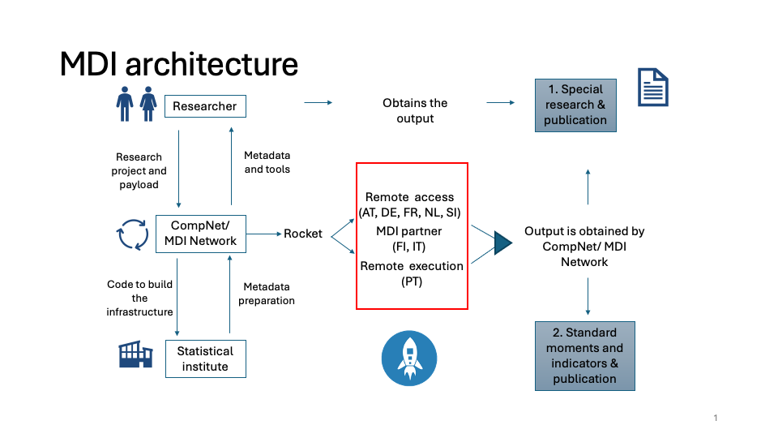
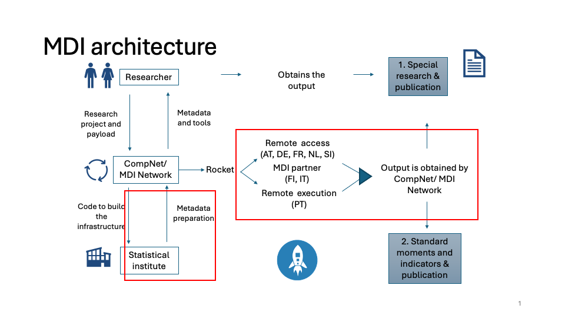
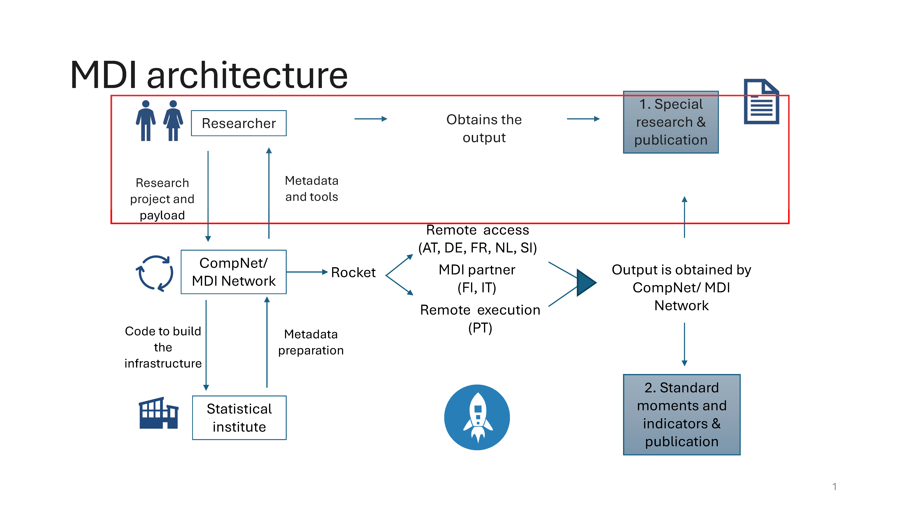
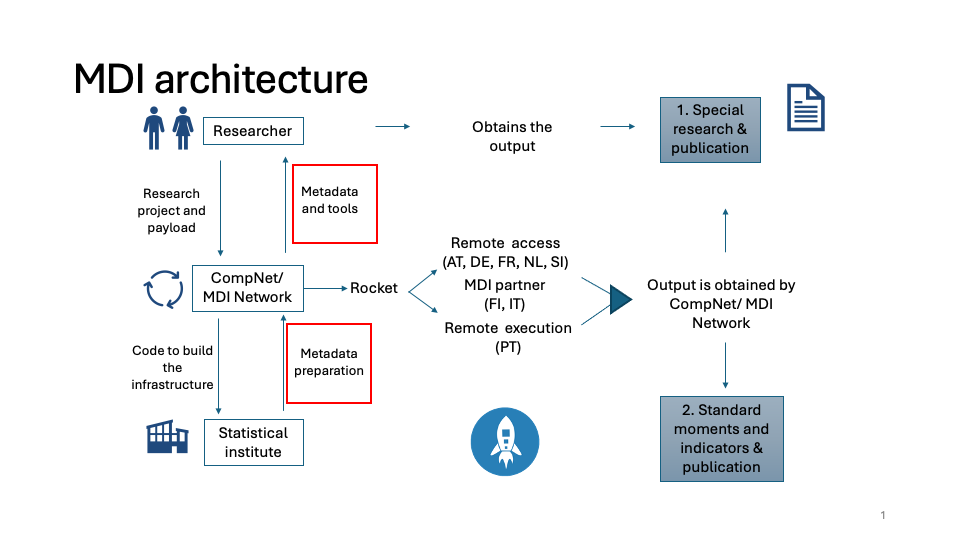

![]()
| Country | Type | Time | Cost |
|---|---|---|---|
| NL | Import code/ metadata | 1-2 days | free of charge |
| NL | Import data | 1-2 days | free of charge |
| NL | Export code/ metadata | 1-2 days | free of charge |
| NL | Light export results/ analysis | 1-2 days | 125 Euro |
| NL | Other export results/ analysis | 1-2 days | 250 Euro |
| SI | Import code/ metadata | 1 day | free of charge |
| SI | Import data | 1 day | free of charge |
| SI | Export code/ metadata | 20-30 days | free of charge |
| SI | Light export results/ analysis | 10-20 days | free of charge |
| SI | Other export results/ analysis | 10 days | free of charge |
| FR | Import code/ metadata | 1-2 days | free of charge |
| FR | Import data | 1-2 days | free of charge |
| FR | Export code/ metadata | 1-2 days | 318 Euro for a 10 unit output package |
| FR | Light export results/ analysis | 1-2 days | 318 Euro for a 10 unit output package |
| FR | Other export results/ analysis | 1-2 days | 318 Euro for a 10 unit output package |
| PT | Import code/ metadata | few days | free of charge |
| PT | Light export results/ analysis | few days | free of charge |
| PT | Other export results/ analysis | few days | free of charge |
| FI | Import code/ metadata | 2-3 days | free of charge |
| FI | Light export results/ analysis | 2-3 days | free of charge |
| FI | Other export results/ analysis | 2-3 days | free of charge |
| AT | Import files | 21-45 days | most cases 1h * 118 Euro |
| AT | Export files | 21-45 days | most cases 1h * 118 Euro |
MDI Users Guide
The never-finished manual of the Micro Data Infrastructure
Overview of MDI

Introduction to MDI
Overview of MDI
The Microdata Infrastructure (MDI) is designed with the dual goal of harmonizing firm-level data across countries and simplifying the research process for conducting cross-country analysis for a wide variety of research “themes”. At its core, MDI offers a standardized environment where researchers can run identical analysis at multiple NSIs where the data are made comparable and accessible through a unified framework. The infrastructure supports a range of functionalities from data importation and harmonization to sophisticated analytical outputs, all within a controlled environment to maintain data confidentiality.
Stakeholders in the MDI Ecosystem
- National Statistical Institutes (NSIs) and other Partners
- NSI remote execution
- NSI remote access
- Partners with country-specific (remote) access
NSIs provide the underlying data and support remote execution and/or access to confidential firm-level data. They vary in legal access rules, available data, and technical setups but are the backbone of the standardized MDI research environment.
- Module writers (MDI users)
- Productivity Boards
- External Academic and Policy
- MDI ‘Theme’ research staff
MDI Users includes productivity boards, external academic and policy researchers, and MDI ‘Thematic’ research staff. They are responsible for creating research modules that leverage MDI’s capabilities for cross-country data analysis.
- MDI staff
- Country specialists
- Thematic research personnel
- Infrastructure support teams
MDI staff ensure the development and smooth operation of the MDI environment, assist NSIs in data preparation and documentation, and assist module writers (MDI Users) with knowledge of data, tools, and research themes.
Stakeholder NSI and Partners

The MDI at an NSI site
- NSIs differ in legal access rules and technical setup for research use of firm-level data. The MDI facilitates access by providing a one-stop method for researchers to run their analysis as
payloadin an MDI rocket in multiple countries. MDI staff negotiates access contracts with each NSI according to national rules. - NSIs differ in available data files (registers, surveys, administrative data sources) and specifications. The MDI provides researchers with a selection of micro-data (MD) panel datasets and variables that look identical across countries to computer code. The statistical and economic concepts are harmonized and the construction of the MD panels and variables from the underlying NSI sources are transparently documented.
- MDI metadata describe in each country the available files (surveys or register data), variables, and classification lists and are used to map all underlying data to the specification of harmonized MD firm-level panels
- At every NSI (including the
mock data site), the MDI environment looks the same to the code in therocketand itspayload - The rocket runs at the NSI in the MDI environment; reads data and metadata; and creates harmonized microdata (MD) panels.
- The `payload’ consists of research modules written in R with standardized tools and launch specific metadata. The payload code will generate statistical and analytical output in each country that can pass statistical disclosure. The output can therefore can be used for further cross-country analysis.
Importing to, and exporting from, the NSI site
- Whenever an import or export operation needs to be carried out from/to an environment, one should keep in mind how long it takes to do so and whether it involves a monetary cost
- In general, the files to be downloaded from MDI to the NSI, are stored in a TEAMS directory accessible to that NSI tema. The files are on the ‘download’ directory of a sharepoint file that you can share to your own machine, for example: “../OneDrive-SharedLibraries-IWHEconomicStudiesLab/MDI Data Providers Forum - PT”
- Each NSI also gets an MDI TEAMS directory ‘upload’ to upload output from the rocket.
Initial set-up of MDI at the NSI (launch_v2.x)
- For the first time using MDI, find a directory to place all the MDI files and subdirectories. The person setting up the MDI and running MDI
rocketsneed to have read and write access to the directories and their subdirectories - Install the four MDI directories–to be found on the MDI TEAMS cloud directory—under the main ‘root’ directory chosen for MDI:
- docs (documentation of the MDI system, including this MDI Manual)
- rocket (code to support and control MDI rocket launches, NSI metadata, auxilliary data)
- payload (Research modules, includes metadata: NSI-specific NSI_MD concordances)
- launchpad (NSI specific information to control MDI code and rocket launches)
- Make sure the user and the R programs have read access to the directory with raw data files
- Prepare a read/write directory for output files (pre-disclosure) create by the MDI R-code. After disclosure the files in this directory can be uploaded to the MDI TEAMS cloud directory available to the NSI staff.
- Fill in all the parameters needed in the file
launchpad/countdown.R, including paths to relevant directories.
The directories at the NSI site MDI installation
Files in the MDI folder
.
├── docs
├── launchpad
├── payload
├── rocket
└── sitedirectory launchpad (with files to launch MDI)
launchpad
├── README.md
├── countdown.R
├── interactive_MDI.R
├── liftoff.R
├── metadata_cheker.R
├── pre_launch_checker.R
├── prepare_NSI.R
└── report_file_changes.Rsubdirectories of rocket (with code, and (meta)data to support MDI)
rocket
├── CompNet
├── MDIprogs
├── NSImetadata
├── Rtools
├── auxdata
└── controlsubdirectories of payload (with analytical code and MD (meta)data)
payload
├── Launch_v2.0
├── Launch_v2.1
└── Launch_v2.2Preparing NSI metadata
- The NSI provides metadata of available firm-level data files.
- The NSI and MDI staff construct metadata to harmonize and link the raw files to the firm-level panel (MD) datasets, whose standards are described in the metadata of MD panels and variables provided by MDI.
- To aid in preparation of metadata, run
countdown.Rand choose programprepare_nsi.R(but not before filling out local information in the filelaunchpad/countdown.R). The preliminary metadata files are written to the dirOUTPUT directory and need to be editted. The instruction are given below in the section Metadata. The completed metadatafiles should be uploaed to the TEAMS directory and will, after processing and checking by the MDI team, be added to the NSImetadata directory for that country. The NSI can then download an updated version of the rocket, including the new metadata.
Launching the rocket and delivering output
When a new launch date is set, the NSI needs to download the latest version of the docs and rocket directories from the MDI Teams cloud site (if there are new versions available), and overwrite the old versions.
The new ‘payload’ subdirectory
launch_v2.xdirectory needs to be downloaded and placed under the payload directory of the main MDI root directory.The file
countdown.Rshould be copied to the user’s directory and edited. Runningcountdown.Rwill allow user to choose further path of execution.Two folders need to created (with no constraints on how to name them – they can be stored to a directory of preference to the user):
- Output folder
- Folder for temporary files
The following fields need to be manually specified, based on the directory system of the environment:
dirMDI: path to the MDI folderCountryCode: 2-letter ISO 3166 code of the country of referencedirINPUTDATA: path to the generic folder where the raw data is storeddirOUTPUT: path to the output folderdirTMPSAVE: path to the folder for temporary files- Disclosure parameters
MDIminNumObs: minimum number of firm-level observations underlying computation of cell of output fileMDIdomSh: maximum share of top X firms to meet dominance criterionMDIdomNr: the X in top X firms.
The program
pre_launch_checker.R(runcountdown.Rand choose this program) needs to be run before anything else. It performs various checks on the NSI metadata to avoid errors later on. The results of the checks can be found in the filepre_launch_checker_results.txtin the output directory. It shows possible errors that should be adjusted in the NSI metadata. Additionally, two concordance files (NSI_pcc8t0_pcc8t1_conc.csv and NSI_MD_nace_conc.csv) are created using existing concordance files and updating them with the data at the NSI. These concordance table might contain empty values, if no value was previously defined. Missing values need to be filled in manually. When the concordance files are ready to be used, they need to be moved to the directory indicated inpre_launch_checker_results.txtThe program
liftoff.R, chosen after runningcountdown.R, will run the MDI rocket and analytical modules. Iterations with the MDI staff may be needed for fixes and patches to the rocket and payload, until the final results are written to thedirOUTPUTdirectory.The files in
dirOUTPUTneed to be checked for disclosureThe files in
dirOUTPUTcan be uploaded to the MDI Teams upload directory.
Mechanics of countdown, liftoff, rocket, payload
- Copy
countdown.Rfrom MDI/launchpad/ to your own working directory. Fill in all parameters. - Run
countdown.Rand choose which program to run: - Run
pre_launch_checker.Rwhich you should run whenever a new version of the MDI system has been installed. It checks for consistency between NSI metadata known to MDI and the information in the data at the NSI site. - Run
liftoff.R, which calls control/rocket.Rrocket.Rcalls- load_MDIenvironment.R
- document_output.R (generates information to document details of launch and output files)
- read_MDmetadata.R
- read_NSImetadata.R (EB: _datafiles, maybe others….)
- read_auxdata.R (deflators for now, maybe WIOD, downstream, maybe these go in modules)
- read_firmdata.R (based on selectnames for all modules….)
- payload/launch_v2.x/run_modules.R executes the payload modules
- cleanup.R cleans up the environment
- Run
prepare_NSI.Rwhich sets up the NSI environment to generate metadata - Run
interactive_MDIwhich you should run whenever working with the MDI system (other than liftoff or prepare).
Countdown - all details
The countdown (coundown.R) is the starting point for all use of the MDI. It requires the to do some small adjustments, to make sure that the MDI can be executed successfully for the purpose selected. The following parameters need to be adjusted by the user.
- MDI Installation Directory (
dirMDI): Set the full path to the directory where all MDI files will be stored. Make sure the path ends with a “/”, eg. dirMDI=“my/dir/” - CountryCode (
CountryCode): Specify a 2-letter country code following the ISO 3166-1 alpha-2 standard. - NSI data directory (
dirINPUTDATA): Set the full path to the directory containing the NSI firm-level data files (or mock data). These input data files are the raw data from the National Statistical Institute (NSI) that the MDI process will integrate and harmonize. - Output directory (
dirOUTPUT): Define the directory to which all generated output files will be exported. This directory is where results, module outputs and other output files will be stored. - Temporary storage directory (
dirTMPSAVE): Set the directory for temporary storage of MDI virtual longitudinal datasets.
Note
This path helps manage intermediate files and allows to reuse processed data without re-importing each time. This is also where harmonized datasets are stored, if MDISaveFiles=TRUE (see below).
- Disclosure parameters (click here for more details)
- (
MDIminNumObs): Minimum number of firm-level observations in an output cell (e.g., 10). - (
MDIdomVar): Variable for dominance criterion (e.g., “persons_br”) - (
MDIdomSh): Maximum share (threshold) for top firms (e.g., 0.5). - (
MDIdomNr): The number of top firms considered for dominance (e.g., 1).
- (
- Optional - Define native data type (
NativeDataType): This is used for the metadata preparation. Indicate the file format of the NSI data (e.g., csv, dta, sas7bdat, sav, xlsx, txt, or mix if multiple formats). - Optional - Flags for temporary files: These flags control how the MDI process handles temporary files, data imports, and whether to start fresh or reuse cached data.
MDIimportFlag: Set to TRUE if you want to import raw NSI data files directly. If FALSE, the program uses existing virtual data from dirTMPSAVE.MDISaveFiles: If TRUE, MDI virtual longitudinal data are saved in dirTMPSAVE.MDIcleanTMP: If TRUE, the temporary directory dirTMPSAVE is cleaned before running.
- Optional - to control execution: These flags influence how the MDI scripts run, whether they produce debug output, and what data environment they assume.
MDIdebug: Set to TRUE to display all logs, warnings, and errors. Use FALSE for a cleaner, quieter run.MDIimputeFlag: Reserved for potential data imputation routines (currently not in active use).IsMOCK: Set to TRUE if running a test scenario with mock data.
Click here to see the entire countdown.R scrip
# This file is used to work start MDI
# fill in all the parameters and save this file: countdown.R
# run the program in R and then choose to execute:
# 1. run pre_launch_checker.R to run after an update of MDI at NSI, to check and fix metadata
# 2. run liftoff.R to run rocket: execute MD harmonizer and run payload modules
# 3. run prepare_NSI.R to run things to aid in getting metadata in good shape
# 4. run interactive_MDI.R to initialize environment to test/debug/explore/write module code.
rm(list = ls())
MDI_launch_version <- "v2.1"
########################################
# Compulsory steps
########################################
########################################
# 10. Set the full path to the directory where you install the MDI files
########################################
dirMDI <- "/files/MDI/"
########################################
# 9. Give 2 letter country code for your site ("TS" for mock-data site, "ISO 3166-1 alpha-2" standard for others)
########################################
CountryCode <- "FI"
########################################
# 8. Set the full path to the directory with NSI firm-level data files (or mockdata files)
########################################
dirINPUTDATA <- "/files/NSIdatafiles/"
########################################
# 7. Set the full path to the directory to which generated files are exported (dirOUTPUT)
########################################
dirOUTPUT <- "/files/output/"
########################################
# 6. Set the full path to the directory for temporary storage of MDI virtual longitudinal datasets (dirTMPSAVE)
########################################
dirTMPSAVE <- "/files/TMP/"
########################################
# 5. Parameters for Disclosure routine #
########################################
# Define the minimum number of firm-level observations underlying computation of cell of output file
MDIminNumObs <- 10
## Calculate dominance criterion based on employment ('emp') or sales ('nq')
MDIdomVar <- "persons_br"
# maximum share of top X firms to meet dominance criterion
MDIdomSh <- 0.5
# define the X in top X firms
MDIdomNr <- 1
########################################
# Optional steps (steps 4, 3 & 2)
########################################
########################################
# 4. Set file extension (or type) of NSI firm-level data (any valid type for package 'Haven')
# i.e. sas7bdat (SAS), sav (SPSS), dta (Stata), xlsx (Excel), csv (comma-separated), txt (tab separated).
# use: "mix" if you have multiple types. Programs will search for all valid dataset types
# EB: allow NativeDataTypes <- c("csv","dta",....)???
# EB: right now, all valid types in dirINPUTDATA dirs/subdirs are put into SNI_datafiles by prepare_NSI.R program
########################################
NativeDataType <- "csv"
#####################################
# 3. Flags for temporary MDI files #
#####################################
# set ImportFlag=TRUE if you want to import raw NSI data files (if FALSE: reads MDI virtual data from dirTMPSAVE)
MDIimportFlag <- FALSE
# set flag=TRUE if you want MDI virtual longitudinal data to be saved in dirTMPSAVE
MDISaveFiles <- TRUE
# set cleanTMP=TRUE if you would like to clean the dirTMPSAVE before running
MDIcleanTMP <- FALSE
#####################################
# 2. Flags to control execution #
#####################################
# set debug = TRUE if you don't want to suppress logs, warnings and errors
MDIdebug <- TRUE
## NOTE EB: Nothing done at the moment with the imputeflag (was called inputeflag in early versions)
MDIimputeFlag <- FALSE
# Flag to indicate whether this is a test run on the server with mock data
IsMOCK <- TRUE
# If isMOCK, temporary files are stored in CountryCode folder,
# so that files arent overwritten when switching country
if (IsMOCK) {
dirTMPSAVE <- paste0(dirTMPSAVE, CountryCode, "/")
if (!dir.exists(dirTMPSAVE)) {
dir.create(dirTMPSAVE)
}
}
##############################
# 1. Liftoff #
##############################
# save the program countdown.R to your work directory.
# Run the file to choose which program/feature to execute:
# Now, pick the program to be executed
# 1. run pre_launch_checker.R to run after an update of MDI at NSI, to check and fix metadata
# 2. run liftoff.R to run rocket: execute MD harmonizer and run payload modules
# 3. run prepare_NSI.R to run things to aid in getting metadata in good shape
# 4. run interactive_MDI.R to initialize environment to test/debug/explore/write module code.
# ---> Choose below with number of the selected program
# Check if the session is interactive (works both in RStudio and console)
if (interactive()) {
# Use select.list() for interactive selection
user_input <- select.list(c("pre_launch_checker.R", "liftoff.R", "prepare_NSI.R", "interactive_MDI.R"), title = "Choose a program to run:")
if (user_input != "") {
# Source the corresponding script
source(paste0(dirMDI, "launchpad/", user_input))
} else {
cat("No selection made. Exiting.\n")
}
} else {
# If not in an interactive session, use readline()
user_input <- as.integer(readline(prompt = "Please enter an integer (1 for pre_launch_checker.R, 2 for liftoff.R, 3 prepare_NSI.R, 4 interactive_MDI.R): "))
if (!is.na(user_input) && user_input %in% 1:4) {
# Map the user input to the corresponding script name
# Source the corresponding script
source(paste0(dirMDI, "launchpad/", user_input))
} else {
cat("Invalid input. Please enter a valid integer (1, 2, 3 or 4).\n")
}
}
Specifications for the NSI Metadata
This section summarizes the structure and content of the NSI metadata files. Specifically the metadata documents, in a machine and human readable form, the available data files, the description of the rows of the file (units of observation), the name and description of the variables (columns) in each file, the valid values (class and domain) for that variable in each row. The following paragraphs provide guidance on preparing the country specific metadata files.
Once created, the NSI metadata files need to be uploaded to the TEAMS directory. After the NSI downloads the rocket, the metadata files of the NSI will be in the rocket/NSImetadata/*NSI*/ directory of the MDI infrastructure. The MDI program called pre_launch_checker.R, to be run whenever MDI is updated, will flag inconsistencies and other problems in the metadata.
There are various types of (human- and machince-readable) metadata files prepared by the NSI:
- A file that lists the available NSI firm-level datafiles (
_datafiles) - Files that document the variables and their descriptions for each raw datafile listed above (
_varnames). - Files that map categorical answers to their description (
_codebook). - Files that describe classification variables on the datasets (
_class, e.g. industry or product codes). - Files that describe how a classification variable changes from year to year (
_classvart0_classvart1_timeconc). - A file that maps the firm ID code–the enterprise unit– to the enterprise group in a given year (
_firmid_entgrp_conc).
It is advised to construct the files in the same order as in the above list.
Together with the MDI team, the NSI also creates metadata to aid in harmonizing the NSI data to the MD specification. The MDI team provides, possibly specific to each launch, the metadata describing the MD datasets and its variables. Further, the MDI team, together with the NSI, provide concordances that are used to harmonize the NSI data files to the common format.
Additionally, the MDI team provides tools to aid the creation of the above listed metadata files for the NSI data. Please, check directory /rocket/MDIprogs/metadata_tools/.
In the filenames for the metadata, the acronym NSI is used. This should be substituted with the 2-letter country code for the country in question (using the ISO3166-2 standard, e.g. NSI = PT). For the MDI metadata, the two letters MD are used, and for the mock data test site, the letters TS are used.
1. List of NSI dataFiles – NSI_datafiles.csv
This file contains the list of all available raw data files on a country’s environment. The file has the following columns:
[1] NSI_dataset,NSI_datafile,yearvar,year_start,year_end,format,path,detailswhere,
NSI_datasetis the ‘generic’ name of the NSI datafileNSI_datafileis the name of the file in the NSI environmentyearvargives name of year variable ifNSI_datafileis a panel, empty otherwiseyear_startis the starting year of the data fileyear_endis the last year of the data file (if empty or NA, the file is a panel and includes a variable ‘year’)formatis the file extension (csv, sas, stata, etc) of the file (i.e. also the storage format of the data)pathindicates path of the datafile relative to the NSI data directory (given by the parameterdirINPUTDATAin launchpad/countdown.R)detailscontains additional notes on the file
An example (for NSI=FI, 2018) of the metadata for the raw data files (the columns yearvar, year_end, path and details are omitted for viewing):
| NSI_dataset | NSI_datafile | year_start | format |
|---|---|---|---|
| bd | bd2018 | 2018 | csv |
| br | br2018 | 2018 | csv |
| bs | bs2018 | 2018 | csv |
| cis | cis2018 | 2018 | csv |
| ifats | ifats2018 | 2018 | csv |
| itgs | itgs2018 | 2018 | csv |
| *Note: Only the first 5 rows are displayed. | |||
2. File-specific metadata – NSI_varnames.csv
This file contain the list of all variables in each raw datafile appearing in the column NSI_datafile of NSI_datafiles.csv. Each file has the following columns:
[1] NSI_datafile,NSI_varname,is_key,description,class,domainwhere
NSI_datafileis the name of the file in the NSI environmentNSI_varnameis the name (hopefully mnemonic) of the variable in the raw fileis_keyis a boolean stating whether variable belongs to the (possibly joint) unique keys of the datafile, e.g.firmid, orfirmid,yearare often the unique key(s).descriptioncontains a description of the variable, if possible using Eurostat conventionclassis the type of value that the variable holds (e.g. numeric, date, character, logical)domainprovides information on the values of the variable. See examples below:- classification: e.g. list of industry, region, product or codes. (values is metadata filename: e.g. NSI_classname_class.csv, which provides a list of permissible values and descriptions)
- file-specific codebook of categorical answers. (value is metadata filename, e.g. *NSI_codebook.csv containing permissible values, such as ‘yes’, ‘no’,‘maybe’, or ‘small’, ‘large’, ‘medium’.
- For other values:
- For monetary values, “1000” (for 1000 Euros)
- For dates: “%m%d%Y” (R date-format for mmddyyyy). For ‘year’ variable, we use “%Y”
- For real units, choose from: “ton” (weight, 1000kg), “m3” (volume), “GJ” (energy), “unit” (1 item).
Domain: Expenditures, Quantities, Dates
| Measure | Domain Entry | Description |
|---|---|---|
| Expenditure | 1000 | … or 1 Euro; 10000000 Euro; etc. |
| Foreign currency | 1*FXC | … or 1000 etc.; Where FXC is an ISO 4217 3-letter currency code |
| Employment | 1 | 1 here refers to 1 FTE; or 1000; … or 1 Emp if in persons |
| Numerical | 1 | 1 here refers to 1 unit; … or 10; 100; where ‘unit’ gives unit in lowercase for the variable in the NSI data file |
| Date | %Y-%m-%d | Use the R date format that matches the values for the NSI date or year variable |
Domain: Classification or Categorical (factor) variables
| Variable | Domain_Entry | Description |
|---|---|---|
| Classification variable | NSI_classname_class | An (official) list, ie NL_nace |
| Categorical variable | NSI_codebook | Contains permissible values for categorical (factor) variables, e.g. ‘yes’, ‘no’,‘maybe’ |
Example: Netherlands (SBS, 2018): NL_varnames.
| NSI_datafile | NSI_varname | is_key | description | class | domain |
|---|---|---|---|---|---|
| sbs2018 | ent_id | 1 | Enterprise ID (identification | character | |
| sbs2018 | sbs_12110 | 0 | Turnover | numeric | 1000 |
| sbs2018 | sbs_12150 | 0 | Value added at factor cost | numeric | 1000 |
| sbs2018 | sbs_12170 | 0 | Gross operating surplus | numeric | 1000 |
| sbs2018 | sbs_13110 | 0 | Total purchases of goods and s | numeric | 1000 |
| *Note: Only the first 5 rows are displayed. | |||||
3. Codebook for categorical variables – NSI_codebook.csv
This file contains the possible values of a categorical variable and the description that belongs to that value. There rows give the possible values occuring in firm data for a particular NSI_datafile and NSI_varname. The name of the codebook should be given in the ‘domain’ columnn of NSI_varnames for the relevant categorical variable.
[1] NSI_dataset,NSI_varname,year,code,description[NSI_datafile,NSI_varname, year, code , description ]
where,
NSI_datasetis the name of the generic dataset in the NSI environmentNSI_varnameis the name of the variable of that specific raw datasetyearis the year for which codebook values hold. If empty, holds for all years of the NSI datasetcodegives all the values of the categorical variable that occur for thatNSI_varnamein thatNSI_datafiledescriptiongives the description explaining each code value
An example below of the values occuring for the unit of measurement in the SI ENER data for 2012.
| NSI_dataset | year | NSI_varname | code | description |
|---|---|---|---|---|
| MIKRO_INDL_razST | NA | ME | 1000 SIT | thousands of slovenian tolars |
| MIKRO_INDL_razST | NA | ME | EUR | euros |
| MIKRO_INDL_razST | NA | ME | GJ | Gigajoule - a unit of energy |
| MIKRO_INDL_razST | NA | ME | MWh | Megawatt-hour - a unit of energy |
| MIKRO_INDL_razST | NA | ME | TJ | terajoules |
| *Note: Only the first 5 rows are displayed. | ||||
4. Classification lists – NSI_classvar_class.csv
This file contains the unique list of codes per year of a specific classification variable in a country. Note that there should be a list for every categorical variable in each dataset. The related table has the following columns:
[1] code,year,descriptionwhere,
codeis the list values of the classification variable observed in the datayearis the related yeardescriptiongives the description for each code value
An sample of rows from the table of PRODCOM codes (in this case some randomly selected rows from the list of codes of Finland):
| code | year |
|---|---|
| 14142489 | 2021 |
| 25992330 | 2020 |
| 34104130 | 2006 |
| 23192500 | 2021 |
| 2414713090 | 2005 |
| 24105310 | 2016 |
| 24144153 | 2007 |
| 32403200 | 2019 |
| 28111337 | 2020 |
| 17121300 | 2013 |
| 20153930 | 2013 |
| 26152690 | 2006 |
| 24521270 | 2004 |
| 23111214 | 2018 |
| 19201100 | 2004 |
5. Time concordances for classifications – NSI_classvart0_classvart1_timeconc.csv
This file contains the concordance table for classification lists between a code at time t-1 and the corresponding code at t. This means that in column left all codes appearing in the reference year should be present, regardless of whether they change or disappear in the following year. The reference year is indicated in column year. In other words, t=year.
[1] left,right,yearwhere,
leftis the code at timet-1rightis the value(s) the code in columnleftcan take at timetyearis the reference year
For example, the following table displays how such table looks like for a subset of ITGS codes in PT:
| left | right | year |
|---|---|---|
| 37029180 | 37029790 | 2011 |
| 29349096 | 29349990 | 2001 |
| 84136041 | 84136031 | 2005 |
| 72125051 | 72125040 | 2003 |
| 3049098 | 3049065 | 1990 |
| 85279092 | 85279020 | 2005 |
| 8702 10 19 | 8702 20 10 | 2016 |
| 4029119 | 4029110 | 2007 |
| 8418 50 11 | 8418 50 11 | 2021 |
| 8082067 | 8082050 | 1997 |
| 1029059 | 1022959 | 2011 |
| 48058090 | 48022000 | 2001 |
| 11032990 | 11032090 | 2001 |
| 72145091 | 72145090 | 1993 |
| 6116 93 00 | 6116 10 20 | 2021 |
6. Firm ID to enterprise group ID concordance – NSI_firmid_entgrp_conc.csv
This file contains a concordance table between enterprise unit (firm ID) codes and enterprise group codes by year.
[1] "firmid" "entgrp" "year" where, - firmid is the firm ID code - entgrp is the enterprise group ID code - year is the reference year For example,
| firmid | entgrp | year |
|---|---|---|
| EoYncPX1QK | ZDfQhvv | 2019 |
| Zn1yzAeYA4 | oOUz7Ep | 2021 |
| B4iCIhzgPi | oOUz7Ep | 2013 |
| 9sJnqQM0lo | ZDfQhvv | 2002 |
| FPSgiOjwA7 | MEVq1XW | 2007 |
| 0g0AFLyHCe | MEVq1XW | 2015 |
| hlmrG4AyLu | oOUz7Ep | 2011 |
Specifications for the MD Metadata
- Work in this section is a collaboration between NSI and MDI staff
- In an iterative process, using NSI metadata for each country, and taking into account research needs of MD users, a specification is made of the MD panels and variables.
- MD_datafiles.csv describe the harmonized panel datasets generated in each launch
- MD_varnames.csv describe the variables per dataset, with their description, class, and domain.
- MD classifications: versions of official classifications, such as EU NaceR2 activities or NUTS2 regions
- MD codebooks: valid values for categorical variables
1. List of micro-dataset (MD) panels – MD_datafiles.csv
This file contains the list of all firm-level MD panels generated by the MDI code and usable by researchers via code modules. The file has following columns:
This file contains the list of all harmonized firm-level micro data panels (MD datafiles) that can be used in research by code in an MDI launch, either individually, or linked at the firm-year level.
[1] MD_dataset,description,detailswhere,
MD_datasetis the name of the MD panel (R data.table) at runtime of the launchdescriptionA description of the panel and its underlying source datadetailscontains additional notes on the file
Below is the list of currently available MD panels:
| MD_dataset | description | details |
|---|---|---|
| BR | Business Register | see: https://ec.europa.eu/eurostat/ |
| BS | Balance Sheet | Balance Sheet on Enterprise groups |
| BD | Business Dynamics | |
| SBS | Structural Business Statistics | |
| CIS | Community Innovation Survey | (only available in even numbered ye |
| ICTEC | ICT Usage in Enterprises Survey | https://ec.europa.eu/eurostat/cache |
| ITGS | International Trade in Goods | |
| ITS | International Trade in Services | |
| OFATS | Outgoing Foreign Affiliates Statist | |
| IFATS | Incoming Foreign Affiliates Statsti | |
| ENER | Energy Use at Firms | in progress harmonization across co |
| PRODCOM | Production Communitaire by firm and | https://ec.europa.eu/eurostat/web/p |
2. Micro-dataset (MD) variables – MD_varnames.csv
This file contains the list of all variables available in all the MD firm-level panel datsets that have been generated by the MDI code using the NSI datafiles, NSI metadata, and the NSI-MD concordances. The file has the following columns:
[1] MD_varname,MD_dataset,is_key,description,class,domainwhere
MD_datasetis the name of the MD firm-level panel dataset, ie BR, SBS, etc.MD_varnameis the name of the variable in the virtual firm-level datasetis_keyis a boolean stating whether variable belongs to the (possibly joint) unique keys of the dataset, e.g.firmid, orfirmid,yearare often the unique key(s).descriptioncontains a description of the variable, if possible using Eurostat conventionclassis the type of value that the variable holds (e.g. integer, character, boolean etc.)domain- classification: e.g. list of industry, region, product or codes. (values is metadata filename: e.g. MD_filename_varname_list.csv, which provides a list of permissible values and descriptions)
- MD-specific codebook of categorical answers. (value is metadata filename, e.g. MD_codebookname_codes.csv containing permissible values, such as ‘yes’, ‘no’,‘maybe’
- For other values:
- For monetary values, “1000” (for 1000 Euros)
- For dates: “%m%d%Y” (R date-format for mmddyyyy). For ‘year’ variable, we use “%Y”
- For real units, choose from: “ton” (weight, 1000kg), “m3” (volume), “GJ” (energy), “unit” (1 item).
Domain: Expenditures, Quantities, Dates
| Measure | Domain_Entry | Description |
|---|---|---|
| Expenditure | 1000 Euro | |
| Employment | 1 FTE | … or 1 Emp if in persons |
| Numerical | 1 ‘unit’ | ‘Unit’ gives unit used in NSI data file, or is left blank if just a count. |
| Date | %Y | For now, we use a R format for 4-digit year as the date variable |
| Weight | 1 kg | |
| Volume | 1 m3 | |
| Area | 1 m2 | |
| Length | 1 m | |
| Energy | 1 GJ | GigaJoule |
Domain: Classification or Categorical (factor) variables
| Variable | Domain_Entry | Description |
|---|---|---|
| Classification variable | NSI_classname_class | An (official) list, ie NL_nace |
| Categorical variable | NSI_codebook | Contains permissible values for categorical (factor) variables, e.g. ‘yes’, ‘no’,‘maybe’ |
Below is a sample of 5 rows of the file MD_varnames with harmonized MD variables
| MD_dataset | MD_varname | description | domain |
|---|---|---|---|
| CIS | inpssu | Introduced onto the marke | |
| ICTEC | RBTS | Use service robots | |
| ICTEC | CRMSTR | share of information with | |
| BD | merger | Enterprise merged with an | |
| CIS | year | Year | %Y |
3. Classification lists – MD_classvar_class.csv
This file contains the unique list of codes per year of a specific classification variable from the MD panels. Note that there should be a list for every categorical variable in each MD datasets. The related table has the following columns:
[code , description ]
where,
codeis the list values of the classification variable observed in the datadescriptiongives the description for each code value
An example of the table for NACE codes (in this case the official EU NaceR2 classification):
| code | description |
|---|---|
| C17.2.2 | ____Manufacture of household and sanitary goods and of toilet requisit |
| C17.2.3 | ____Manufacture of paper stationery |
| C17.2.4 | ____Manufacture of wallpaper |
| C17.2.9 | ____Manufacture of other articles of paper and paperboard |
| C18 | __Printing and reproduction of recorded media |
| C18.1 | ___Printing and service activities related to printing |
| *Note: Only 5 rows are displayed. | |
4. Hierarchy files for classifications – MD_classvar_hier.csv
This file contains a series of columns that refer to different nodes of the classification variable in question. With this file, the user can easily aggregate or disaggregate the data based on the different nodes of the classification variable.
The columns of the file are labelled as h_X, where X is a number from 0 to N denoting one of the N available nodes in the variable.
An example of a hierarchy table for NACE codes (in this case the official EU NaceR2 classification):
| h_0 | h_1 | h_2 | h_3 | h_4 |
|---|---|---|---|---|
| 6491 | 649 | 64 | K | TOT |
| 2222 | 222 | 22 | C | TOT |
| 9810 | 981 | 98 | T | TOT |
| 2331 | 233 | 23 | C | TOT |
| 4743 | 474 | 47 | G | TOT |
| *Note: Only 5 rows are displayed. | ||||
5. Codebook for categorical variables – MD_codebook.csv
This file contains the possible values of a categorical variable and the description that belongs to that value. Note that sometimes a particular codebook is ‘re-used’ for multiple variables. The name of the codebook should be given in the ‘domain’ columnn of the metadata for the file containing the categorical variable.
[MD_dataset,MD_varname, code , description ]
where,
MD_datasetis the name of the MD firm-level panel dataset, ie BR, SBS, etc.MD_varnameis the name of the variable of that specific MD datasetcodegives the valid values of the ccategorical variabledescriptiongives the description for each code value
An example below of the values given for some variables in the MD BR business register dataset
| MD_dataset | MD_varname | code | description |
|---|---|---|---|
| BD | status | 1 | born in reference year |
| BD | status | 2 | active entire reference year |
| BD | status | 3 | dead in reference year |
| BD | status | 4 | born and dead in reference year |
| BR | demo | 0 | ”No demographic relation in ref. year” |
| BR | demo | 1 | ”Receiving employment from other enterprise in ref. year” |
| *Note: Only 5 rows are displayed. | |||
6. Key ID overview – MD_idInfo.csv
As we need to coordinate our data work across multiple countries, there are differences in what the key identifiers of the different MD datasets are. The table below illustrates the situation for the countries to which we currently have access to.
Key ID management
Among our toolkit, we have a tool that allows to aggregate or disaggregate from one key ID to the other. The tool in question is rocket/MDIprogs/mdi_key_id_switch.R. The function relies on metadata file NSI_firmid_entgrp_conc.csv.
Specifications for metadata needed for the NSI to MD harmonization
- Harmonization of MD panels entails harmonization of units of observation, variable definitions, and variable values
- The key to harmonization is NSI metadata, MD metadata, and NSI to MDI concordances
- The MD standard metadata is found ‘iteratively’ and can evolve as countries join and as new MDI research users and MDI launches have different data requirements
- The MD metadata and NSI to MDI concordances allow live updates of the MDI data documentation
- Mapping units of ‘firms’, enterprises, legal units requires knowledge of NSI source data: registers, (weighted) sampling, sample designs
- Harmonizing variable definitions and nomenclature is done through renaming, revaluing or combining NSI variables.
- In the
*NSI*\_MD\_conc.csvfile, information is available to show how an MD variable (from a particular MD dataset) is generated from NSI variables, through the harmonization operations remap, revalue, or redefine.
- In the
- Harmonizing values of classification variables is done by reclassifying values over time to MD standard
- A concordance for each NSI classification version to the MDI standard is needed. Each observed value of the classification code in rawdata needs to be mapped to the MD classification, otherwise the raw data observations are lost. This is done using the concordance file
*NSI*_*classname*_MD_*classname*_classconc.csv
- A concordance for each NSI classification version to the MDI standard is needed. Each observed value of the classification code in rawdata needs to be mapped to the MD classification, otherwise the raw data observations are lost. This is done using the concordance file
- Harmonizing categorical variables is done by recoding between conforming values from codebooks
- To harmonize data values for categorical variables, a concordance is made between
*NSI*__MD_codeconc.csv.
- To harmonize data values for categorical variables, a concordance is made between
- To concord other data values ((currency) units, date values), R functions are used to revalue
- E.g. If the domains of the variable in NSI data is 1000 and in MD data 1, then the NSI value is multiplied by 1000. If the NSI value is in an R date-value, say
%d%m%Y, an R date function is used convert to the required R date-value.
- E.g. If the domains of the variable in NSI data is 1000 and in MD data 1, then the NSI value is multiplied by 1000. If the NSI value is in an R date-value, say
Note
Only remap and redefine rows store columns in the final MD panel. Hence, for a MD variable to be present in the output data, one of the two methods needs to be used.
1. Concordance file – NSI_MD_conc.csv
This file contains the list of all variables in a particular MD panel, with information on how to map the NSI variables from one or more raw datafile (often one for each year) to the MD variable. The related table has the following column names:
[1] NSI_dataset,year,NSI_varname,MD_dataset,MD_varname,method,detailwhere,
NSI_datasetis the generic name of the data, that together withyearspecify the NSI datafile that hosts the variable to be use in concording. If year is empty, the concordance does not change over the years.yearis the year for which the concordance holds. If the mapping involves an NSI_datafile which is a panel, the column needs to be filled just with the first year available. If the NSI_datafile is a cross-section, the column needs to be filled with the year it is referenced to (in other words, there has to be one set of mapping rows per NSI_datafile).NSI_varnameis the name of the variable in the NSI datafileMD_datasetis the name of the MD firm-level panel dataset, ie BR, SBS, etc.MD_varnameis the name of the variable in the MD data source to be generatedmethodis the method used to harmonize the data. The value of the categorical variable, provides the method for generating the harmonized variableMD_varname.revalueThe values of the variable are changed using an R function and parameters in the columndetailand possibly from theclassanddomainsvariable from the relevant_varnamesfiles.recodeThe values of the variable are changed using a codebook concordance, whose name is given in dedetailscolumn, e.g. ‘NSI_filename_MD_dataset_codeconc.csv’. Only values that need to be changed require a row in the_codeconc.reclassThe values of the variable are changed using a classification concordance, whose name is given in thedetailscolumn, ‘NSI_classname_MD_classname_classconc.csv’. This is used to reclassify e.g. industry, region classifications.remapThe name of the variable is changed, in a one-to-one mapping fromNSI_VarnametoMD_varname.redefineThe MD variable is generated as a linear combination of the NSI variable. The column detail specifies the linear combination, i.e ‘+’ or ‘-’) in the many-to-one NSI_varname to MD_varname mapping.
detailcontains the function for revalue, the concordance for codebook or classification for recode and remap, and the linear operations for redefine. For revalue, any valid operation operating on the NSI_varname (referred to asx) is good. If the domains of the variable in NSI data is 1000 and in MD data 1, then the NSI value is multiplied by 1000, so detail =x*1000. If the NSI value is in an R date-value, say%d%m%Y, an R date function is used convert to the required R date-value, format(as.Date(x,“%d%m%Y”),“%Y”)NSI_datafileis the name of the raw dataset from where theNSI_variableis taken fromyearis the reference year for that specific row, which will be used to construct the MD-cross section for that year
An example of the table for a few variables needed for Slovenian harmonized MD BR for year 2007 (column year is omitted):
| NSI_dataset | NSI_varname | MD_dataset | MD_varname | method | detail |
|---|---|---|---|---|---|
| MIKRO_PRS_razST | MS10_razST | BR | firmid | remap | |
| MIKRO_PRS_razST | MS10_IZP_MS7_razST | BR | entgrp | remap | |
| MIKRO_PRS_razST | Datum_prv_vnosa | BR | birthyr | revalue | as.Date(as.character(x), ‘%d%m%Y’) |
| MIKRO_PRS_razST | Datum_izbrisa | BR | exityr | revalue | as.Date(as.character(x), ‘%d%m%Y’) |
| MIKRO_PRS_razST | Skd | BR | nace | remap | |
| MIKRO_PRS_razST | Vrsta_lastnine | BR | soe | recode | SI_MD_codeconc |
| MIKRO_PRS_razST | Datum_prv_vnosa | BR | birthyr | remap | |
| MIKRO_PRS_razST | Datum_izbrisa | BR | exityr | remap | |
| MIKRO_PRS_razST | Vrsta_lastnine | BR | soe | remap |
2. NSI_MD_codeconc.csv
[NSI_dataset, year, NSI_varname, MD_varname, left , right ]
where,
NSI_datasetis the generic name of the data, that together withyearspecify the NSI datafile that hosts the variable to be use in concording. If year is empty, the concordance does not change over the years.yearis the year for which the concordance holds. If empty, the same concordance rows are used for all NSI datafiles associated with the genericNSI_dataset.NSI_varnameis the name of the variable of the specific NSI datafile associated with dataset and year.MD_varnameis the name of the corresponding MD variableleftgives the valid values of the categorical variable in the raw NSI datasetrightgives the corresponding MDI dataset values to map
Below an example of the codebook concordance table in Portugal:
| NSI_dataset | NSI_varname | year | MD_dataset | MD_varname | left | right |
|---|---|---|---|---|---|---|
| ifats | imputeifats | NA | IFATS | imputed | 1 | 0 |
| ifats | imputeifats | NA | IFATS | imputed | 2 | 1 |
| itgs | exim | NA | ITGS | exim | 1 | 0 |
| itgs | exim | NA | ITGS | exim | 2 | 1 |
| itgs | imputeitgs | NA | ITGS | imputed | 1 | 0 |
| *Note: Only 5 rows are displayed. | ||||||
3. NSI_classname_MD_classname_classconc.csv
[1] left,rightwhere,
leftis the name of the current NSI classification code list for variableNSI\_classnamerightis the name of the MD classification code list the user wants to concord to
Below a sample of the Nace R1.1 to Nace R2.2 classification concordance
| left | right |
|---|---|
| 150 | 9499 |
| 1513 | 1085 |
| 113 | 122 |
| 1771 | 1431 |
| 125 | 149 |
| *Note: Only 5 rows are displayed. | |
Disclosure Criteria and Adherence
What are Disclosure Criteria
- The disclosure criteria in National Statistical Institutes (NSIs) are rules designed to ensure that outputs generated from sensitive firm-level data do not compromise the confidentiality of individual firms. These criteria prevent the identification of specific firms or their sensitive information from aggregated data. They are essential for maintaining compliance with privacy and data protection regulations in each country.
Components of Disclosure Criteria in the MDI:
- Dominance Share (domPerc): The maximum share of the total (e.g., employment, sales) contributed by the largest ‘X’ firms (number ‘X’ defined by domNr) in a cell. Example: If domPerc is 0.75, The top ‘X’ firms cannot contribute more than 75% to the cell’s total.
- Minimum Number of Observations (NumObs): The minimum number of firms required in a cell for it to be included in the output. Example: If NumObs is 3, at least 3 firms must contribute to a cell.
- Top Firms Count (domNr): Specifies how many top firms’ shares are considered when applying the dominance criterion (domPerc). Example: If domNr is 1, the dominance is based on the largest firm; if 2, the top two firms are considered.
- Dominance Variable (domVar): The variable on which the dominance criterion is applied, such as employment (emp) or sales (nq). Different NSIs may apply criteria to different variables, depending on their legal requirements. Note: The domVar can be ‘var’ in the countdown. If so, the domPerc is computed for all variables for which an aggregate is computed.
Disclosure Criteria in MDI Countries
| Country | domPerc | NumObs | domNr | domVar |
|---|---|---|---|---|
| Finland (FI) | 0.75 | 3 | 1 | emp |
| France (FR) | 0.85 | 3 | 1 | - |
| Netherlands (NL) | 0.5 | 10 | 1 | - |
| Portugal (PT) | - | 3 | 0 | nq |
| Slovenia (SI) | 0.5 | 5 | 1 | - |
Some countries may have additional disclosure criteria, for eg. NL and SI need all exported variables to follow the dominance share criterion (not only emp (employment) and nq (sales)). In this case, the domVar is defined as ‘var’ in the countdown.
The disclosure parameters are set in the Countdown when running the Infrastructure at an NSI, either by MDI or NSI staff.
How Disclosure Criteria Are Applied:
MDI Tools like mdi_aggregate(), disclose(), DisclosCrit(), mdi_regress() and mdi_export() help automate the disclosure control for the researcher by enforcing disclosure criteria before the output is released, based on the disclosure parameters set in the Countdown.
The primary disclosure (step 1) criteria necessitates obscuring of all cells that do not satisfy dominance criterion or cells that include less than ‘minNrObs’ observations.
The secondary disclosure (step 2) criterion necessitates obscuring of one or more additional cells to protect those defined as primary confidential cells, by the minimum frequency rule. This entails suppressing the smallest cell if only one cell has been suppressed in step 1, only in case of totals/sums and if the parent node is available.
For example, a cell that doesn’t meet NumObs or exceeds domPerc is suppressed. Outputs violating criteria are flagged or excluded from export.
Disclosure Tools in MDI
| Tool | Purpose | Use.by.Researchers | Use.Other.MDI.Tools |
|---|---|---|---|
| mdi_aggregate.R | Aggregate data with optional disclosure checks: dominance threshold (`domPerc`) and minimum observations (`NumObs`). | Yes | Yes (`disclosCrit`, `disclose`) |
| mdi_regress.R | Performs regression analysis and automatically checks whether the number of observations meets the required minimum threshold for disclosure. Skips regressions that fail the check. | Yes | No |
| mdi_export.R | Exports datasets with optional disclosure compliance and metadata logging. | Yes | Yes (`disclose`) |
| disclose.R | Performs primary and secondary disclosure checks. | No | No |
| disclosCrit.R | Adds disclosure metrics (`domPerc`, `NumObs`) to datasets. | No | No |
- The document listing all the MDI Tools and their functions is
MDI_Rpackage_0.2.1.pdfin the ‘MDI/docs/’ folder. - It is recommended that module writers use MDI Tools to comply with the disclosure criteria of all the countries that the module intends to run in.
MDI Staff + Module Writers
Setup for Researcher
- Module writers may or may not have access to actual firm-level data in a country
- MDI documentation with available datasets and variables, plus descriptions, by country-year
- Code can be tested using mock-data inside launcher run in a ‘mock’ environment that mimics an NSI
- An R initialization program’ (../launchpad/interactive_MDI.R) sets up the mock-data environment with all the metadata and Rtools.
- Module writers analyse ‘consolidated’ output
- The MDI staff will stack the files from each country to create files for analysis by each module writer
- An R ‘initialization program’, (../launchpad/interactive_MDI.R), will add Rtools that are useful for analysis (graphs, tables, cross-country panel regressions, etc) (*)
MDI Rtools
- There are five ‘types’ of R tools
- Metadata: aid in generating, verifying, and manipulating metadata
- Infra: to be used by MDI staff and launcher importing data, harmonization, disclosure checking
- MDI: mostly for module writers, e.g. merge_datatables, regressions, aggregations, export
- Analysis: help in analytical tasks and reporting
- Programmer: aid in R coding
- Tools are documented using Roxygen2 and’exported as package’. Using standar R synatx ?function() will provide the documentation of a function, and clicing on the R package ‘mdi’ in the package tab of RStudio will bring up the list of functions inside the package.
R Package Management
For consistency and reproducibility across NSI remote environments, the MDI team maintains a standardized list of R packages (with version numbers) that must be installed prior to each launch. This list is maintained in the file Rpackage_info_v2.1_.csv, located in /MDI/rocket/Rtools/Rpackages/.
All module writers are required to inform the MDI team at least two months in advance of any additional packages their modules will depend on. These packages will be reviewed and, if approved, added to the centralized list.
The MDI team also maintains an overview of:
- Installed R versions per NSI, along with details on package installation policies (Rversions_countries.csv, located in /MDI/docs/).
Code
library(readr)
library(knitr)
library(kableExtra)
# Read the rversions data
rversions_data <- read_csv("Rversions_countries.csv", show_col_types = FALSE)Warning: One or more parsing issues, call `problems()` on your data frame for details,
e.g.:
dat <- vroom(...)
problems(dat)Code
# Create a scrollable table
kable(rversions_data, format = "html", escape = TRUE) %>%
kable_styling(full_width = FALSE) %>%
column_spec(ncol(rversions_data), width = "25em") %>%
scroll_box(width = "100%", height = "auto")| Country,R-version,Date,cran_install (Yes/No),"install_method (CRAN, IT-managed, Other specify)",version_control (Yes/No/Partial specify),r_update_freq,library_restore (Yes/No/Manual),Additional info |
|---|
| Slovenia,4.4.1,Apr.25,No,The package files need to be imported to the environment and manually installed,Yes but it can be annoying to handle with dependencies,a few times per year,Yes, |
| France,4.3.1,Aug.24,,,,,, |
| Austria,4.1.3,Aug.24,No, IT-managed, No,They provide all Users with a shared library so they always install the newest version., Ad hoc |
| Finland,4.3.1,Aug.24,,,,,, |
| Portugal,4.2.3,Aug.24,,,,,, |
| Netherlands,4.2.3,Sept.24,No,IT-managed,Partial,Every 1.5 months,Yes,"During each scheduled maintenance weekend, all packages are updated to their latest versions. Older versions are archived, allowing rollback to a specific version if needed (CBS will assist with this on request). However, if a desired version was never the latest at the time of a maintenance update, it won’t be available on the server." |
Code
# Display table with column definitions
rversions_def <- read_csv("Rversions_columns_definitions.csv", show_col_types = FALSE)
# Display it as a regular table
kable(rversions_def)| Column name | Definition |
|---|---|
| R-version | The current R-version installed in the NSI remote env. |
| Date | Date of the last info updation on the R-version |
| cran_install (Yes/No) | Whether packages can be installed directly from CRAN (Yes/No) |
| install_method (CRAN, IT-managed, Other specify) | Method used if not CRAN (e.g., Manual, IT-managed, Custom script) |
| version_control (Yes/No/Partial specify) | Can specific package versions be installed (Yes/No/Partial) |
| r_update_freq | Frequency of R updates (e.g., Quarterly, Annually, Ad hoc) |
| library_restore (Yes/No/Manual) | Whether initial libraries are restored after update (Yes/No/Manual) |
| Additional info | Any additional notes or info |
- Package conflict resolution preferences, documented in conflicts_prefer.csv under /MDI/rocket/Rtools/Rpackages/.
In the event of package conflicts, we follow the preferences outlined in the conflict resolution file. However, when a module requires a function from a package that is not the preferred one, authors must use the explicit package::function() syntax to avoid ambiguity. As a general rule, this syntax is encouraged to improve clarity and compatibility across systems.
While we strive for a harmonized environment, variations may still exist between countries due to specific local constraints. When such discrepancies occur, the affected packages are documented and communicated to module writers ahead of deployment.
Auxiliary Files
Deflators
The deflators are obtained by extracting data from Eurostat using the eurostat R library. These include deflators for value-added, capital depreciation, investments, GDP, and the harmonized consumer price index. The data is processed and cleaned to ensure consistency and relevance, with the base year set to 2010 (normalized to 1). The Eurostat datasets used include nama_10_a64, nama_10_a64_p5, nama_10_gdp, prc_hicp_aind, and nama_10_nfa, covering national accounts and price indices. Industry codes are mapped to 4-digit NACE Rev.2 classifications for compatibility with firm-level data, ensuring the deflators can be applied to various economic analyses. The resulting deflator file is a structured dataset with rows representing country codes (cc), industry codes (ind), and years (year). It includes various columns for deflators such as value-added (pnv), capital depreciation (pnc), GDP (pngdp), and consumer price index (pnhcpi). Additionally, it features asset-specific deflators (e.g., construction, machinery, intellectual property) along with growth and depreciation rates, providing a detailed overview of deflators for further analysis.
Test Server and Mockdata Environment
At present we are using the cloud server Nuvolos. This server replicates the environment of a national statistical institute and includes the MDI infrastructure. The Nuvolos server provides all the necessary tools, scripts, and libraries required to develop research modules. It also contains a mock dataset—a simulated version of real data that preserves the structure and functionality of actual data while excluding any sensitive details. More information can be found in the section “Nuvolos Server”
Module Writers (MDI Users)
This group includes productivity boards, external academic and policy researchers, and MDI ‘Theme’ research staff. They are responsible for creating research modules that leverage MDI’s capabilities for data analysis.
Overview of MDI

Writing Modules for MDI Launch
Writing modules for the MDI Launch is an iterative process that evolves from conceptualization to execution. It requires a good understanding of the research objectives, data structures, and the technical capabilities of the MDI environment.
Key Steps in Module Development
- Defining the Research Question: Every module begins with a clear, concise research question. This question should be capable of leveraging the cross-country data available within MDI to generate insightful analyses.
- Workflow Organization: Divide your analysis into manageable segments. Consider general methodology; data selection; design output from NSIs; code using the MDI tools and launcher; plan cross-country analysis
- Data Selection: Utilize the MDI data catalog (EB: link to rcode to MD_datafile and MD_varnames files) to select the most relevant datasets and variables for your analysis.
Note
Make sure that the MD variables used in the module are present in all countries.
- Designing Outputs: Plan the outputs of your module carefully, including the datasets, records, and variables to be exported from each NSI.
- Analysis: Use MDI R-packages and Rtools: See the R-package libraries currently installed at NSIs and loaded at runtime of the launcher (link to file “../rocket/Rtools/Rpackages/record_package_info.csv”). If you need another package, notify MDI-staff to have the package added to NSI requirements. Use standardized functions from the MDI Rtools (link to directory “../rocket/Rtools/R”), especially when preparing output.
- Export data: Using Rtool
mdi_export(), generate output in each NSI, to go through disclosure checks. Collect cross-country consolidated output from TEAMS directory for module writers
Focus on
mdi_export()
It is fundamental, for disclosure reasons, that the module writer fills in exhaustive information related to each output file when using function mdi_export(). In particular, please provide
format
Character string specifying the format of the export (‘csv’, ‘RDS’, ‘txt’, ‘dta’, ‘xlsx’, ‘sas’).output_name
The name of the file to be created, without the file extension and the country code.datasets_used
The name of the MD_dataset(s) used for the analysis.purpose
Describe the research purpose of the analysis.rel_other_output
Describe how this output file relates to other previously exported/requested files, for instance whether it performs the analysis in a different way and, if so, how.selection
Describe if the results contained in the file were derived from a specific selection of the sample available (if so, explain which selection) or if the full sample is used.export_type
Character string indicating the type of output (‘sum_stat’ for summary statistics, ‘reg_tab’ for regression table, or ‘other’).description
A string providing additional explanation of the output file.
- Documentation and Summary: Before coding, document your module’s aim, the datasets and variables required, and any additional resources needed that are not part of the standard MDI environment. (EB: Link to example of module heading)
Practical module writing
- Generally two ‘types’ of output
- Moments and joint moments by using mdi_aggregate()
- Analytical output: e.g. regression results using mdi_regress()
- Discuss: what other types are needed?
- Be aware of output size: don’t get close to disclosure problems
- Output generated by Other output files are not exported from NSI
- Do not use code that calls ‘operating system’, creates (sub)directories, installs Rpackages
- Be aware of RAM limitations: be a smart coder and clean up unneeded datasets
Note
Before writing the analytical code, make sure that a research acronym for your code (specified as res_group <- '(some 2-letter string)') is present in the environment!
Importing Data
- NSI metadata has all needed concordances to make the microdata panels (MD) to standards: The Launcher harmonizes and stores each MD panel. The choices are made in the file ../launchpad/countdown.R ( dirTMPSAVE gives file path for saved MD panels, and flags ImportFlag (TRUE), SaveFiles(TRUE) and cleanTMP (TRUE) set logic for rocket.
- The module generated an names_select_Module file (which also was provided to the launcher to generate all the data for all the modules.
- When reading in a file, ie BR, only read those variables that you selected
- Double check that your selected variables are indeed available in that country. If not, provide logic in program skipping some analysis or providing and alternative.
- When merging data from two files use mdi_mergeDTs()
- Only keep needed observations of each and needed variables (see R Joins in session 2)
Manipulating Data
- You are free to manipulate the linked panels in any way, using R
- R data.table is efficient for large datasets. dplyr and tidyverse are convenient syntaxes for many applications
- Since you may not be able to export graphs (we need to check disclosure rules in each site) export a file with enough observations of needed variables to generate display outside using consolidated data
- Hierachies of classifications are very handy to generate ad-hoc aggregations. So, instead of the standard aggregation to 2-digit or 1-digit industries, generate classifications of firms, for example by use of technology and export-status, or by magnitude of mark-ups and rent-sharing. See hier_apply() calling mdi_aggregate().
- There are tools for PIM, pim_capital(), and prod estimation, estimate_prod()
Aggregating and exporting
- Use mdi_aggregate() with disclosure=TRUE.
- Stack aggregate output if they share enough columns and have rows that identify them uniquely.
- Use mdi_regress() to run models.
- can call various regression functions (fixest package). We want to add plm.
- generates a row of a datatable for each model that is run
- checks for underlying number of observations for disclosure flag (especially if run ‘by group’)
- Stack regression output if they share enough columns and have rows that identify then uniquely.
- Call
mdi\_exportfor output frommdi\_aggregateormdi\_regress - Think of other types of output to generate, check disclosure, and export.
Analysis of MDI Module Output
- NSIs will upload each country’s output into their Teams folder
- MDI staff will consolidate (stack) each modules outputs by country and place the module (and general launcher) output in the appropriate Teams fold for modules writers.
- The researcher can run ../launchpad/interactive_MDI.R to set up their MDI environment in a standard manner.
- The researcher analyses the output, possibly using standardized tools for statistical analysis, graphing, reporting.
Stacking metadata output files
- Among the possible files that can be exported from a country’s environment there are metadata files.
- In that case, it can be that the number of files is quite large, making it much slower – and likely more expensive too – for the NSI to carry out the export process.
- For this reason, such metadata files are often stacked into broader aggregations, such as by
MD_datasetfor the*NSI*\_varnames.csvfiles. - The following R code provides a way to unpack those aggregated metadata files to make sure they are stored in the proper structure.
Code
'
This tool unpacks the (NSI)_(MD_dataset)_varnames.csv files into NSI_dataset-specific varname files.
'
########################################################################################
MD_datafiles <- fread(paste0(dirPAYLOAD,'MDmetadata/MD_datafiles.csv'))
MD_varnames <- fread(paste0(dirPAYLOAD,'MDmetadata/MD_varnames.csv'))
files <- list.files(paste0(dirROCKET,'NSImetadata/',CountryCode,'/'), recursive = T)
files <- files[grepl('_varnames',files)]
for (file in files) {
data <- fread(paste0(dirROCKET,'NSImetadata/',CountryCode,'/',file))
NSI_files <- unique(data$filename)
for (NSI_file in NSI_files) {
data_filt <- data[filename == NSI_file,]
data_filt$filename <- NULL
names(data_filt) <- c('NSI_varname','is_key','description','class','domain')
fwrite(data_filt, paste0(dirROCKET,'NSImetadata/',CountryCode,'/',CountryCode,'_',NSI_file,'_varnames.csv'))
}
}Work at NSI
Some more details of steps at NSI
- Bring MDI directory structure into NSI environment, including Rtools, metadata etc
- Install the needed R packages
- Define root of path to data files
- Place list of all files, with info, into Metadata directory
- Place lists for each ‘classification’ variables into Metadata directory
- Place list of all variables, by filename, type, and codebook names in Metadata directory
- Provide ‘concordances’ for classifications and for variable to map to ‘MDI’ version
Preparation for each Launch
- Fill in country specific parameters in
launchpad\countdown.R(see here for more details) - Once for each launch, run
prepare_NSI.rfor generating new metadata - Once for each launch run
liftoff.R, with countdown.R parameter SaveFiles<-TRUE and cleanTMP<-FALSE. This makes and stores harmonized MD files for use with payload. Keep the temporary files on disk during full launch window, unless re-run is needed - Run
liftoff.R, with countdown.R parameter ImportFlag<-FALSE, so that payload modules will use the above temporary MD files. (if there are fixes to be made to the data, run again with ImportFlag<-TRUE). - Conduct disclosure checking of files - Upload output to Teams (LINK HERE to directory for a particular CC)

The Harmonzied MD Longitudinal Firm Panels
- In NL and France, NSI harmonized the raw datafiles to look like MD datasets. Not much concording done by launcher.
- We want to shift the boundary between work of NSI and MDI
- NSIs document their files: Launcher reads files and uses metadata to generate MD panels.
- NSI does all harmonization to MD standards: Launcher reads the files into R
- Advantage to having Launcher do the work:
- Reduce maintenance costs for NSI (annual updates)
- Improve codification of conceptual work done by NSI staff
- …but higher cost to learn rigid method of documentation/codification of metadata and to coordinate with MDI
MDI Infra Tasks
Preparation for Launch and Mission Control
- Pre-launch testing
- Lockdown of version, transfer to TEAMS/NSIs
- Interacting NSI and MDI staff during launch period
- Collecting output
Pre-launch Testing
- Use
mdi.labs.vu.nlsite, with rs-user login - Start with fresh R each time (under options, choose to never save and datasets, open files, loaded packages; Quit R before quitting the remote server).
- Always test ‘from the beginning’.
- Test using different countdown parameters, on dataset saving, tempdir, disclosure. (discuss with mockdata folks to make data to allow for different types of tests).
- Have a formal testing ‘checklist’ and have a sub-team approve the release
Lockdown of version
- Lock the R package list
- Make Github branch
Launch v2.1 - Run file/program to get github commit of version (Marco?), re-commit
Launch_v2.1 - Run scripts to transfer from github to NSI specific Teams site
- Ask NSIs to download. Make a new MDI root directory voor v2.1 (back-up the old one). ave NSI sysadmin update required R packages, and roxygenize and install the MDI package.
Interaction NSI - MDI during launch
- download zip of MDI to
dirMDI, keep zip file. - Edit MDI metadata and progs as needed.
- Flag if change pertains to other countries. Move up chain, and back to NSIs with fixes
- In extreme case, decide to relaunch…..
- We write script using R file-info to compare MDI and MDIzip after launch is finished. NSIs send metadata fixes to us, tools fixes are reported…
Work on MDI tools
- Metadata tools: list2hier, hier2cp
- MDI tools
- improved harmonizing and concording
- traversing hierarchy
- index number aggregation
- Infra tools: mock data generation and environment
- Analysis tools: What do we want?
Mockdata
- Mock data is key
- Code development for Rocket needs to be tested
- New MDI staff need to be trained
- Country metadata and concordances need testing, requiring country specific mock data
- Specifications for mock data
- All files from NSI_datafiles.csv are covered, with all years as given by NSI_filename_varnames
- All varnames from all NSI files, with proper format and domain (including classification, codebook etc)
- Underlying ‘firm’ datasets
- SBS/BS cobb douglas, deterministic with stochastic draws. Start with firm size and back out k, m, y from stochastic productivity and k/l moments
- SBS/BS forward looking Hopenhayn with stochastic prod draw and shocks to prod and demand: endogenous exit.
- SBS/BS Firms a la Aglio, Bartelsmanj with draws of A/g and \(\eta\), \(\rho\).
- Firm dynamics with innovation, extensive choice of innovative activity (ICTEC, R&D)
- Firms with extensive and intensive trade choices (ITGS, ITS, OFATS, IFATS)
break tasks into small progs (scripts) and tools (functions)
Tools to read country ‘metadata’. Not only datafiles, varnames, but also CompNet stuff on number of firms, prod distribution:
- For a compnet country/industry pair: what is a good parametric prod distribution? (gamma 2,3). Target proper mean/median salers per worker.
- distribution of number of firms per industry in a year
- average entry/exit rates of firms
- average entrant size
- exit hazard by age and size
- trade hazard by firm productivity
- intangible hazard by firm productivity
- credit constraint hazard by firm productivity
For items missig for now, build this table with made up numbers, as default
draw ‘universe’ of firmd identifiers and enterprise identifiers with concordance
- use metadata from country to understand share of firms that are not 1-to-1 with group, and median number of firms in group with more than 1 firm.
Workflow for mock data simulation
- BLOCK0: Prepare Auxiliary Files
- Define the country, the sample periods, the datasets and read country-specific NSI metadata (datafile, varname, codebook).
- Create a table specifying the hierarchical structure among variables.
- Develop a table defining the concordance between fundamental model variables and NSI variables.
- Compile a file detailing auxiliary regressions for predicting numerical, logical, and categorical variables.
- BLOCK0: Obtain Data Moments from the Data or by Simulation
- Calculate the sample mean and variance of employment for each NACE 2-digit sector.
- Determine the average exit rate for each NACE 2-digit sector.
- Extract regression coefficients for auxiliary regressions.
- Gather information on sample sizes of surveys.
- Compute key economic ratios and rates: capital-labor ratio, capital rental rate (interest rate), wage rate, and capital depreciation rate.
- BLOCK1: Simulate an Unbalanced Panel Dataset
- Generate an unbalanced panel dataset for firms over time, incorporating firm entry and exit dynamics based on Hopenhayn (1992).
- Estimate model parameters: \(\alpha\) (output elasticity of labor), \(\sigma\) (standard deviation of TFP process), and
z_exit(exit threshold for firms’ productivity) by targeting the sample mean and variance of the firm size (employment) distribution and the exit probability. - The simulated panel data includes firm ID, year, productivity, labor, capital, depreciation, and EBITDA.
- BLOCK2: Predict BR and BS Variables
- Use concordance tables between model variables and NSI variables, as well as auxiliary regressions and regression coefficients to predict BR and BS variables.
- BLOCK2: Sample from the ‘Universe’ of Firms
- For each survey table, sample from the firm universe and predict NSI variables using the auxiliary regressions and regression coefficients.
Nuvolos Server
Nuvolos is the server environment that we use for trainings, testing, developing and debugging. There are two seperate environments:
MDI Training Environment
MDI Internal testing Environment
If you want to get access to either of the environments, reach out to Johanna via email or Teams.
MDI Training Environment
This space is designed for training, practicing, and familiarizing with the MDI infrastructure. It’s intended mostly for external people, as it already contains all relevant files, ie. the whole MDI infrastucture, mockdata. It’s an environement in which externals can test their codes using the MDI infrastructure and mockdata. It is updated periodically, so doesn’t always reflect the latest version of the MDI. It is not intended for bug-fixing and working on the infrastrucutre, as it doesn’t link to Github.
“Files” section
You’ll find the following folders:
- MDI: containing the MDI infrastructure
- TMP: containing temporary files
- NSIdatafiles: containing mock data files imitating real data
- output: if a script generates any output it can saved here
Writing and executing code
=> go to the section “Applications” on the left navigation bar and open the RStudio application
- Run the countdown:
- In RStudio, on the right in the files section, look for the MDI > launchpad and open countdown.
- R Click on “source” to execute it.
- You will be asked choose a program to run, choose interactive MDI by entering 4
- Wait until the script is done. The metadata, Rtools and libraries are imported - you can now create/ run your script.
- Create/ Execute a Module
- Add a new file
- Add your module code or any code that you want to run
- Execute your code either line-by-line by clicking “run” or all at once by clicking “source”
- When you run your script, any errors will appear in the Console section. The executed lines are highlighted in blue, while errors are displayed in red. To resolve an issue, identify the problematic line in your script, make the necessary corrections, and run it again.
Internal Testing Environment
This space is designed for writing code, creating modules and testing scripts on mock data and debugging. It is intended for the MDI team and module writers who are familar with the MDI and have access to the MDI Github repository. Each user needs to connect their Github account in order to pull/ push changes. - Each user has their own space that means - until you push your code to Github - your changes are only visible to yourself. - You have to make sure yourself that you’re working on the latest version of the MDI, ie. pull changes from Github when you open RStudio, find the most relevant commands below. - You’ll find NSI mock data as well as harmonized MD mock data that you can use for testing and developing your scripts.
First time users: How to connect Github
Navigate to applications (left menu) and open RStudio
Go to the terminal
- Generate a public/private key pair by executing this command:
ssh-keygen -t ed25519(no need to change suggested location or create a password > press enter 3 times) - Navigate to the folder where both are saved. You can do that on the file section on the right side, you might have to click on the “/” to see all directories. The folder .ssh is a hidden folder, so click on the gear symbol and select the option “Show Hidden Files”
- Generate a public/private key pair by executing this command:
Open the id_ed25519.pub and copy it’s content
Open Github in the browser
- In Github: go to settings>SSH and GPG keys
- Click “add new SSH key”
- Add the copied pub key into the key section and add a title eg. “Nuvolos MDI test environment”, then save
Back to Nuvolos, in RStudio, Terminal, clone the branch using this command (from within /files folder, which is default):
git clone --branch pre_Launch_v2.2 --single-branch git@github.com:Secretariat-CompNet/MDI.git- The MDI with all files will show up in the files section on the right
- Then go to home/datahub/ in the file section and open the .gitconfig file. The file will look like this:
[user] email = 12345678+Name@users.noreply.github.com name = YourName [credential] helper = cache --timeout 64800Make sure that the email address is the one from your Github, not eg. the iwh email address. To check which is the right one go to your Github account > Settings > Emails. Copy the email address ending on @users.noreply.github.com as shown below into the .gitconfig file. Save file.
The MDI is correctly set up now. You can run your code with mockdata, edit and pull/push changes to Github
To test codes: execute countdown and select interactive_MDI (option 4) before running your own script.
The most common git commands
To push to/pull from Github, go to terminal
Make sure your in the MDI folder (change dir with this command: cd /files/MDI )
To check changed files use:
git statusAdd file to commit eg:
git add launchpad/countdown.R(path to file or . if you want to add all changed files)Commit changes
git commit -m "Your commit message"To pull changes from Github:
git pull
Acknowledgement
We gratefully acknowledge the support of the EU, whose funding made this project possible. We also thank all NSIs, NPBs, and other collaborators for their valuable input and support in the development of the MDI project and this manual.